筷子
幼儿园我到现在都不会用筷子。
听妈妈说，这怪奶奶。我小时候，奶奶怕我拿筷子捯到嘴，索性一直只让我用勺子。于是“用勺子吃饭”就成了默认，一直用到上学。
开学那天，家里给我办了代伙——说白了，就是中午在幼儿园吃。一屋子孩子端着碗，手里都握着筷子，只有我，攥着一把勺子。那时候我大概已经懂得难为情了：我说不出口“我不会”，也不想做唯一那个。于是我偷看别人的手，学他们捏筷子的样子，把两根木头夹进指缝，装得很熟练。
这一装，装了几十年。现在我还是那样握筷子——姿势是别人的，别扭是我自己的。
画画
幼儿园我从小就爱画画，大概是随了妈妈。
别的孩子一到自由活动就撒出去疯跑，我愿意留在教室里，帮老师画。画过什么大多忘了，只记得一幅“大鱼吃小鱼”——一条大鱼张着嘴，追着一群小鱼。那时我画得特别用力，也特别快乐。
奇怪的是，现在让我画，再也画不出那个味道了。手还是那双手，笔也还是笔，可那股不管不顾的劲儿，不知道哪一年弄丢了。
一瓶娃哈哈
幼儿园我从小是个“玻璃鼻子”，轻轻一碰就流血。有个小伙伴给了我一拳，我的鼻子就出血了。其实也不全怪他——换成别人，大概也一样。
可我那时候懂了一件“聪明”事：幼儿园不许打架，谁先动手谁理亏。于是我捂着鼻子去告了老师。这算不算碰瓷，我到现在也没想明白。
第二天，那孩子赔了我一瓶娃哈哈。我接过来，却一口没喝——总觉得白受别人的东西，是件难为情的事。那几天吃完饭，大家在操场上散步，我手里就提着那瓶娃哈哈，越提越烫手。好不容易熬到午睡，我把它塞进柜子深处，想眼不见为净，结果手伸进去，够不着了。
晚上妈妈来接我，我只好红着脸，请她帮我拿出来。后来那瓶娃哈哈喝没喝，我不记得了；连当年是谁打的我，也不记得了。只记得它沉甸甸地在我手里拎了好几天。
跳蚤市场
幼儿园幼儿园办过一次跳蚤市场。家里翻出不要的玩具，自己标价，卖得的钱可以去老师那儿换一把小扇子。
我卖掉了什么，早忘了。只记得我一直在缠着奶奶，要买别人的东西。奶奶觉得没必要，我就耍赖——孩子的耍赖，无非是拖着、磨着、不肯走。她拗不过我，终于给我买了台小推土机。
在这之前，我看中过同学的一个方盒子，十块钱。奶奶嫌贵，没买。说实话我平时并不喜欢那个同学，嫌他邋遢，这事也就过去了。
让我记到今天的，是散场以后。我抱着小推土机往家走，碰上一个同学，问他：“你买东西了吗？”他说没有，都看不上。我奶奶当场夸他懂事，不乱花钱。
又碰上一个同学，手里两把小扇子。我问哪儿来的。他说，卖东西的钱，分两次交给老师，老师就给了他两把。
那天回家的路我记得很清楚。同样是卖东西，有人换回两把扇子，有人什么也不买、反倒被夸最懂事，而我，只抱着一台推土机。
游泳的小猪
幼儿园有一年是猪年。别的班要开公开课，老师从我们班挑了二十四个孩子，十二个男孩、十二个女孩，扮演十二生肖。
不知怎么就选中了我，还让我第一个上场。我演的，是一只游泳的小猪。
评委老师走过来问我：你在做什么？我一边划着水，一边一本正经地回答：“我是小猪，我在游泳。”
奥特曼
幼儿园有一年放假前，老师宣布：明天上午上完课就放假，代伙的同学中午没饭吃，让家长来接。
我回家跟奶奶说了，请她中午来接我。
第二天中午，同学们一个一个被接走。教室里的人越来越少，最后只剩下我。老师没办法，带我去了隔壁班，跟别班的孩子一起吃饭。
吃完饭，那些孩子看电视，放的是奥特曼。我其实怕打斗的画面，一点都不喜欢。可一屋子男孩都看得热血沸腾，我只好坐在边上跟着看，装作也看得津津有味。
下午，老师搬了张小凳子让我坐在操场上。我一个人坐着，奥特曼的打斗声从屋里一阵一阵传出来。我一直等到快放学，奶奶才来。那天的操场，好像特别大。
第一张画
幼儿园老师常常让我们自己编个故事，上台讲给小朋友听。我怕极了，让我站到那么多人面前开口，简直是要我的命。
后来我想出个办法。有天回家，我在纸上画了好几个太阳、好几个月亮，然后对着这张画，小声讲我的故事。讲着讲着，心里长出一个念头：明天，我要上台。
第二天，老师问谁愿意讲故事。我举手了——我平时很少举手，老师有点意外，就点了我，还夸我勇敢。
我站在上面，脑子里想着那张画，太阳、月亮，一个一个，就把故事讲了下来。
很长很长的故事
幼儿园尝到甜头以后，我就爱上了编故事。
有一回，我自告奋勇给大家编故事，编得太长，长到连我自己都不知道该怎么收尾。我只好一直讲下去。下面的小朋友渐渐没了耐心，开始交头接耳。我急了，去告老师。老师走过来维持了秩序，然后让我继续。
我骑虎难下——其实早就不想讲了，可我不会结尾，又不好意思当着全班的面说“我不讲了”。于是硬着头皮讲啊讲，直到自己也觉得时机终于成熟，才草草收了个尾。
老师走上台，说：“感谢施俊辰，和我们分享了一个很长、很长、很长的故事。”
全班都笑了，我恨不得找个地缝钻进去。
一个西瓜
幼儿园除了自己编故事，老师还让我们看图讲故事——黑板上贴四张连环画，上来一个同学，对着图讲。
有一次我大胆举手，上去讲完，老师夸了我一句，我就下来了。可我太兴奋了，难得上来讲一次，那股劲儿没处去，一转身就跟后排的同学聊起闲话。
“别回头讲话。”老师提醒我。
我没听进去。过了一会儿，又回头了。老师说：“你这么喜欢掉头，干脆站到最后面去。”
我就站到了最后。站在那儿，我忽然特别想知道：我身后到底摆着什么？可我不敢马上回头，怕老师看见。我耐着性子等，等到觉得时机成熟了，猛地一回身——
是一个西瓜。
也就是那一秒，老师又开口了：“你都站到最后一排了，还往后看！”
我到现在还记得那个西瓜。
牙印
幼儿园我爷爷叫施静之，1945年10月23日生，2011年6月23日走的。他腿脚不好，帕金森综合征，得按时吃药，人才清醒。
我上幼儿园那阵，晚上睡前要喝一杯热牛奶。袋装的，用剪刀剪个小口，挤进杯子里，再放进微波炉转。热好了，谁在边上谁去端——有时是我自己，有时是爸妈。
那天我贪玩，不想动。也不知道爸妈在忙什么，总之没人去端。
最后是爷爷去的。
我不在场，想不出他是怎么走过去的。只听见一声响，他摔了。上牙结结实实磕在椅子上，留下一个牙印。老年人的牙本来就脆，这一下，是补不回来的。
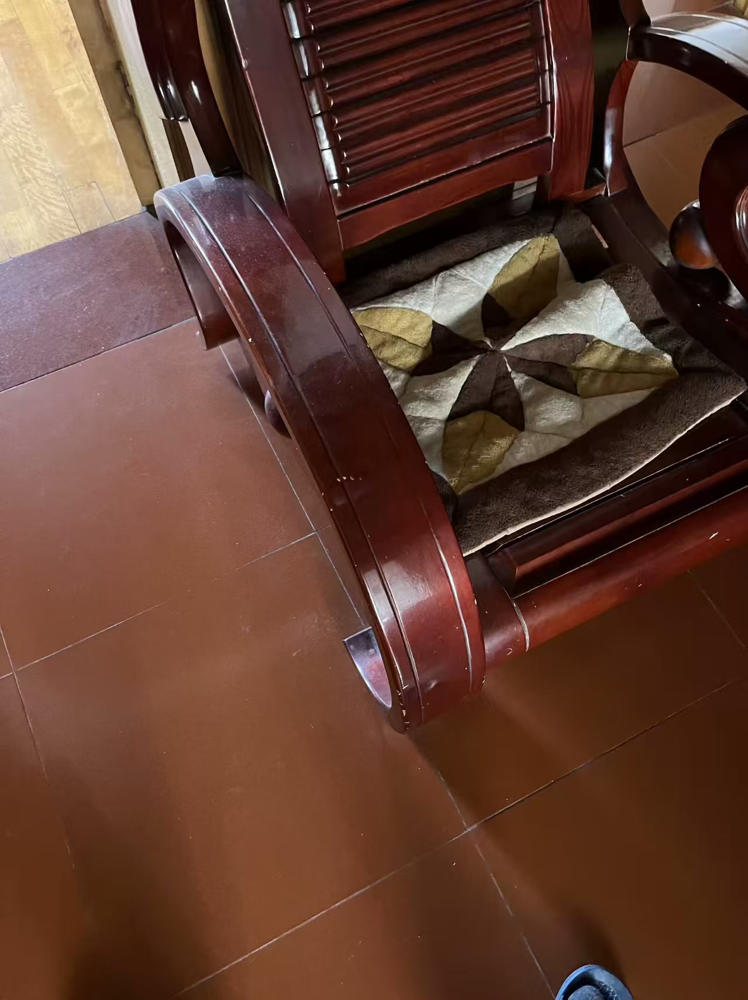
现在回老家，还能看见那个牙印。
那时候没有手机，也就没跟爷爷拍过一张照。
墙上的老鼠
幼儿园奶奶家墙上，曾经有一只老鼠。我画的。
幼儿园那会儿，我本来在纸上画。画着画着，突然想画到墙上去。说不清当时怎么想的——在那以前没在墙上画过，以后也没有，就那一次。
奶奶先拦了一下，后来也就不说什么了。
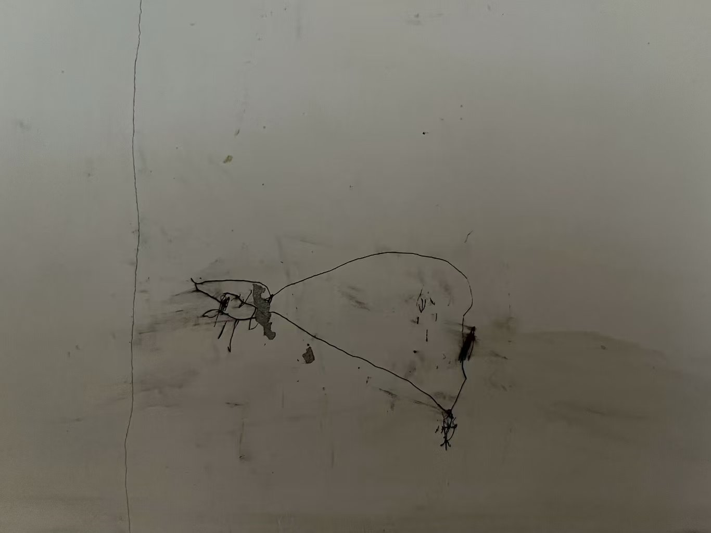
后来奶奶家翻新，刷了墙漆。那只老鼠没了。
背下来的地址
幼儿园奶奶家在解放路 59 号，9 幢 3 单元 105，禹王宫社区。这串地址，我上幼儿园之前就背熟了。
那时候没手机，地址只能记在脑子里。一遍一遍地背，背得跟自己名字一样顺。
房子是爷爷单位分的。爷爷就在房子南边的公安局上班，出门往南走几步就到。我上幼儿园、小学、初中，都住在这套房子里——它离哪所学校都近。
两个盐水蛋
幼儿园在奶奶家，早饭每天都是两个盐水蛋。
锅烧热，鸡蛋直接打进去，撒一点盐，等它定了型就捞出来。就这么简单。奶奶天天做，一天没落。
每年都来的人
幼儿园这些，是奶奶后来讲给我听的。
爷爷早年在出入境，办护照。奶奶说，他那时候职位很高，差一点就要当局长了。偏偏在考核的节骨眼上，人病了。帕金森综合征，就这么退了下来。
那病跟了他一辈子，也把我们家跟公安局拴在一起。每年都有人上门，慰问爷爷。
爷爷走后，那些人还是来。每年一次，来看奶奶，还带着钱。一直到奶奶离世前，没断过。
我小时候见过他们进门的样子。客气，拘谨，像是来完成一桩很久以前的约定。
太极
幼儿园我很小的时候，还没上幼儿园，爷爷奶奶每天早上会下楼锻炼。那时候爷爷清醒的时间还没后来那么短，早上能打太极。我在边上玩，也跟着比划。
家里有一本专门的太极书。
象棋
幼儿园象棋是爷爷教我的。
有一次爷爷奶奶出门回来，爷爷带回来一副象棋。包装很简单，硬纸盒，棋盘是一块轻飘飘的布。
从怎么走子到怎么吃子，都是爷爷教的。我没有别的老师，棋也下得不怎么样。
小挖土机
幼儿园还是很小的时候，爷爷带我在小区周围散步。
有个卖玩具的小摊，我看中一个挖土机，一直央求爷爷买。爷爷说没带钱。我软磨硬泡，他才说，回家拿钱来买。
他真的回家拿了钱，又走回小摊，给我买了那辆挖土机。
雪地里
幼儿园又是一年冬天，下着雪。爷爷带我在外面，走到楼下的时候，他摔倒了。
那时候他腿脚已经不好。我试着扶他，力气太小，扶不动。
奶奶不在家。我一个人跑回家，敲门，心里想着奶奶在。
然后我就把爷爷一个人留在了雪地里。
不知道过了多久。后来是一个陌生的叔叔把他扶起来，开了门，送他上的楼。那位叔叔一直送到家门口，才看见我站在门外。
那段时间，我一句话都没敢说。
小猫钓鱼
幼儿园上学那些年，平时我住在爷爷奶奶家，一到暑假就换到外公外婆家。
外公喜欢躺在藤椅上看电视。屋里有一副扑克牌。我在边上看了半天，鼓起勇气问外公，能不能陪我玩一会儿小猫钓鱼。外公答应了。那天我们玩了很久。
我一直不大敢跟大人提要求，怕被拒绝。很多本来可以一起待着的时候，就那么过去了。后来我常想，换成我的晚辈来邀我玩一局，我大概不会拒绝。
圆形毛刷
幼儿园外公以前是推销员。听我妈妈说，他卖的是一种圆形的毛刷，现在已经不多见了。
这种生意要全国各地跑。妈妈和舅舅还小的时候，常常是外婆一个人带着他们，外公很少回家。
童言无忌
幼儿园有一次不知道听谁说，外公在外面有老婆、有小孩。外婆听了很伤心。
妈妈那时候还小，跟外婆说：不怕。要是外公真带女人小孩回来，我就和舅舅去打那个小孩，让外婆打那个女的。
童言无忌。
透明的房顶
幼儿园以前的夏天常下雷暴大雨。那时候我觉得打雷天特别好玩。
外婆老家的房顶是透明的，躺在屋里能看见外面的天。我专挑打雷的时候看，雨砸在顶上，闪电一亮，整间屋子跟着亮一下。外面翻天覆地，屋里却是安稳的。我就那么看着，觉得很好玩。
外婆的一天
幼儿园外婆一直是个体户。家里有几亩地，都是她自己种。
每天的日程像上了发条：天亮下地，快中午了去菜场卖菜，中午回家吃饭，下午接着下地，再去一趟菜场，天黑了才收工回家。一年到头，几乎天天这样。
田埂上的虫子
幼儿园暑假我住在外婆家，常到田里去玩。田埂上有各种小虫子，我就蹲在那儿看它们爬，看很久。外婆在旁边忙她的，也不叫我回来。
二八大杠
幼儿园外婆的自行车是二八大杠。去菜场的时候，我就坐在前面那根横杠上。
菜场
幼儿园菜场的地上总是湿的，有人不停往上洒水。我蹲在摊子边上，鞋底踩着潮气，其实不太喜欢待在那儿。
隔壁的阿姨
幼儿园我不愿意去菜场，还有一个原因。
外婆摊子隔壁有个阿姨，特别爱逗我。每次见我，非要把我逗哭了才肯罢休。我哭了她就笑，像是完成了什么大事。
八仙桌
幼儿园外婆家吃饭，坐的是一张八仙桌。
座位常年不变。从北面起，从左到右依次是：外婆、外公、舅舅、爸爸、我、表妹、舅妈、妈妈。谁坐哪儿好像是早就定好的，不用谁安排，一坐下就是这个顺序。
第一次来上海
幼儿园外公很早就得了食道癌。
也是因为这个病，我第一次来到上海。那时候陆家嘴的三件套，还只有东方明珠。
吉祥
幼儿园外婆家养过很多条狗，都是看家护院的好手。从我记事起，就有一只黑的、一只白的。后来舅舅拿盖房子剩下的材料，在大门外给它们搭了个窝。它们每天吃的是家里的残羹剩饭。
那一黑一白之后，家里又养了一只小狗，叫吉祥。白色的土狗，瘦瘦的。它跟先前那两只不是一拨——那一黑一白是更早养的，吉祥是后来才来的。刚到家的时候很怕生，谁都不让摸。
外婆家有个后院。我就追着它绕圈跑，跑了一圈又一圈，跑了很久很久。它才慢慢敢靠近我，让我摸一下。
吉祥怀孕
幼儿园吉祥后来怀过一次孕。家里人都怀疑是球球的种，我也觉得是。有一回球球想出去玩，大门没关严，它就溜了出去，没多久又自己回来了。后来吉祥生了几只小仔，一只也没留下，都送人了。
摇着尾巴
幼儿园吉祥后来得病死了。是狂犬病，不知道怎么染上的，它还咬了村里的其他人。
最后舅舅把它牵到一个没人的地方，用棍子活活打死了。
我不敢想象舅舅当时顶着多大的压力才做完这件事。吉祥是他看着长大的，最后又亲手了结了它。吉祥大约不知道主人要把它带去哪里，可能到死前还以为只是出去玩，可能还在摇着尾巴吧。
球球
幼儿园舅舅或者舅妈有个朋友，家里养了很多条狗。不知怎么的，机缘巧合，又多了一只松狮犬的串串，叫丑丑——跟那些纯血统的狗比，确实有点丑。
那天也是暑假。舅舅骑着电动车回来，车前面的车篓里坐着一只小丑狗。我和表妹一看就特别开心。
后来老叫它丑丑也不太好，就改名球球。
两种命
幼儿园原来的吉祥被冷落了，拴在大门外看门。同样两条狗，命却不一样：球球当宠物养在家里，吉祥成了看家护院的土狗。
八仙桌下
幼儿园球球长大以后，越来越看得出是串串。小时候还瞧不出来，长大之后嘴筒子变得很长，像只小狐狸。每天吃饭的时候，它就守在八仙桌底下，等着桌上掉下来的吃食。
爱吹空调的球球
幼儿园夏天天热，有时候家里不让球球进空调房。
它就趴在门口，吹着从门缝底下漏出来的那点冷气。
可门只要一开，给它逮着机会，它立马就溜进来吹空调。
后门
幼儿园球球是不许在家里睡觉的。每天晚上，它都会被关到后门。
那个后门，就是我第一次追着吉祥绕圈跑的地方。
第一次过马路
小学最早的实验小学在禹王宫社区后面，上学要过一条马路。以前都是爸妈牵着我过去。
有一次他们都不在家，我和楼上的邻居汪叶涵一起去上学，跟他说我不敢过马路，被他笑话了一通。
那是我第一次自己过马路。
楼梯口
小学有一次我去得很早，又怕到了教室不知道该做什么，就故意走得很慢。
进了校园，抬眼看见三楼办公室门口站着班主任毛老师，我立刻加快脚步，一转身在楼梯口躲了起来。躲了很久，探出脑袋，他还站在那儿。我只好硬着头皮上楼。
果然，刚进教室就被毛老师叫去谈话。他问我怎么不上来，我说我有点害怕。
爸爸的校友
小学数学老师陈英老师，是我爸爸的校友。
知道这件事以后，我就有点怕她——怕考不好，丢了爸爸的脸。可成绩一直不争气。
躲不掉的口算
小学数学课常有口算听写，十以内的加减，我却总算不出来。
有一回为了躲它，我去参加了学校的象棋比赛，结果第一回合就被淘汰，回来时正好赶上口算听写。
好词好句
小学毛老师喜欢在中午的黑板上抄好词好句，让我们用小本子记下来。
现在想起来，那些句子真好，可惜本子找不到了。
被盗的号
小学那时候流行赛尔号，我练了一个号，爸爸有时也帮我练。号练得还不错，第一星域的几个 boss 也打了不少。
后来我把号借给了潘天——我们从小学就同班，他成绩好，人缘也好。潘天好像又把号给了他的一个朋友玩，那个朋友把我的密码改了，号就再也回不来了。没有人相信是潘天，说他那种人不会做这种事。其实也确实不是他。
我很伤心，一直记在心里，面上却一点没露出来。
黔驴技穷
小学有一次讲故事比赛，我和潘天、夏雨轩一组，比谁讲得好。潘天偏向我，我还没讲完，他就在下面说我的故事好听。
事后老师问我们组谁赢了，夏雨轩很勇敢地提出质疑；老师问她觉得谁的好听，她却沉默了。我知道她心里觉得自己讲得最好。
决赛那天，我装病，想让她替我去。结果被妈妈识破，还是去了现场，最后没有名次。我讲的是黔驴技穷。
丢下去的沙包
小学我和顾纪元在三楼教室门口玩丢沙包，我把沙包失手丢下了楼。快上课了，我不敢下去捡。
回家后跟妈妈撒谎，说美术课要每人做一个沙包，让她帮我做了一个。
保温杯
小学后桌郑欣凯的保温杯，被我打闹时撞出一个小坑。他说不保温了，告老师，要我赔。
我不敢告诉爸妈，把杯子带回家。妈妈问起来，我说是别人的；她说不要拿别人的东西。我更不敢说弄坏了，第二天又带回学校。他又告了老师。
我只好向乔李睿借钱准备赔。妈妈问起水杯的事，我说没事，乔李睿却当场说穿了：“今天他还跟我借钱呢。”我被妈妈打了一顿，钱也赔了。我也没要那个杯子。妈妈回来说我傻——钱都给了，等于买下来了。
从那以后，我很讨厌这个人，他喜欢的我都讨厌。我不喜欢小学生活，冷嘲热讽，被欺负。
书包
小学小学成绩下滑，除了那些冷嘲热讽，家庭作业也是一部分原因。父母上班没时间，把我丢在夏仙梅老师那里写作业。作业随便写，夏老师检查后指出错处，再把答案告诉我。起初我还装装样子，后来干脆抄乔李睿的——连错都跟他一样。他和我一起写，去得比我早；我楼上的琪琪姐姐也在那儿。
有一次我记错了数学作业写多少页，乔李睿也不知道，就跟着我写了那一页。第二天，就我们俩写错了，老师很生气，让我们中午背着书包回家。小学中午放学要排队，背着书包回家的，要么是下午不来了，要么是作业有问题——那时候这是很丢人的事。
我老实，真背着书包走了，被老师看见了；乔李睿却没背。临走前有个同学跟我说，不用背，老师就是吓吓你，我又把书包放了回去。
到了下午，乔李睿的妈妈被老师叫去，说他作业写错、上课不认真；又说施俊辰虽然写错了，但中午接受了惩罚，背着书包回去了。听到这里，我很愧疚。
流动班长
小学小学有个流动班长，每人轮一天，早读和午课前站在讲台上，谁讲话就记谁的名字。
轮到我的那天中午，我特意去得很早——就为了记下那个我很讨厌的人的名字。
英语开窍
小学我小学成绩不好，却进了尖子班。
尖子班的气氛是好的，大家都在学，都想往上跑。不好的是，你成绩要是跟不上，老师会带头排挤你，同学也跟着孤立你。你只能跟同样学不好的孩子玩，于是更不爱学。
那时候班上有种说法：你就是差生。你哪回突然考好了，那就是抄的，是假成绩。我就这样一直不太爱学习。
五六年级的时候，成绩不好的学生会被老师留下来义务补习。语文、数学、英语，分在每周不同的几天，放学之后。不知道怎么的，我突然对英语开窍了——原来考试的内容都在书上，只要记住固定的单词和短语，考试就没问题。
新学期开始，我照旧自觉留下来补英语。那天，英语老师当着所有补习的人夸我进步，说不用再留了，可以直接回家。
不让她住这里
小学一开始，爸妈是跟我们一起住的。后来奶奶和妈妈闹起了矛盾——就是那种最经典的婆媳关系。
奶奶让爸妈搬出去租房子住。房租她出。别的都好说，就是不愿意妈妈住进这个家。
有阵子妈妈一直没回来，住在外婆家。
这些是妈妈后来讲给我的。她说，是有一次吵架，爸爸当着奶奶的面，很坚定地说，他要跟妈妈一起住。奶奶这才不说话了。
我想象不出那个场面。我只记得，后来妈妈回来了。
被欺负的球球
小学有一年暑假在外婆家，表妹要把球球抱到床上，用被子捂住它，不让它呼吸。
我在边上急得不行，想上去救球球，被拦住了。
我那时候不知道还能怎么办，就给妈妈写了一封信，两页纸，把表妹做的事都写了上去。
那封信，妈妈不知道现在还留着没有。
去看看新房子
小学爷爷说，租什么房子，干脆再买一套。
他在江都看了好几家二手的毛坯房，最后定了东方红东路 19 号，4 幢 404，食品小区。
还没装修的时候，爷爷要去看。他腿脚不好，走一步都费劲，可他执意要去，谁也拦不住。
房子装好，爸妈搬了出去。我还留在奶奶家——上学方便。
那套毛坯房的样子，我没见过。爷爷见过了。
兔唇
小学到后来，爷爷清醒的时间很短。除了吃饭，一天里基本都在睡，看电视看着看着就睡着了。
为了让自己醒着，他会咬自己的上嘴唇。咬到后来，嘴唇裂开了，再也长不好，成了兔唇。
帕金森是个很可怕的病。人只能眼睁睁看着自己，一点一点失去能力和意识。
快不行了
小学爷爷去世前那阵子，奶奶特别紧张。
有时候我们一家在外面玩，或者在别的地方，她突然打电话来，说爷爷快不行了，让我们赶紧回去。回去一看，又是虚惊一场。
那时候我心里总觉得，奶奶是在讲不好的话，是在诅咒爷爷。
最后一天
小学最后那天，我们正好在外婆家，准备吃午饭。奶奶打电话来，让我们赶快回去。
我坐在妈妈的电动车后座上，一路还在念叨奶奶：什么爷爷不好了，我爷爷好着呢。
这一次没念叨准。我们慢了一步。
车刚停到楼下，就听见奶奶的哭声，撕心裂肺的，楼下都听得见。
我们赶紧上楼。奶奶站着，左手端着水杯，右手拿着勺子，弯着腰，闭着眼哭，鼻涕拖得老长，也没顾上擦。
床上，爷爷已经没有呼吸了。眼睛都没闭上。
奶奶说，爷爷说嘴巴干，想喝水。她去打了水，用勺子小心地喂。结果爷爷开始吐水。起先以为是躺着喝，呛到了。后来就没有呼吸了。
时间，刚好是我们刚到楼下的那一刻。
我在网上看到过一个说法：人走的时候，最后失去的是听觉。我多希望这是真的。至少爷爷能听见我们，姗姗来迟。
他没等到我们。眼睛都没闭上。
我没哭
小学这是我第一次亲眼看着亲人去世。
那时候我小，不知道该怎么办，很无助，也很迷茫。我没有感觉。
爸爸在走廊上给亲戚打电话，说爷爷去世了。奶奶站在那儿，一副无助的样子。妈妈看着我，摸了摸我的脑袋。
我不知道自己该不该难受，该不该哭。我试着像奶奶那样哭，可好像做不到。
后来我跪在客厅的长桌前，趴下来试着哭。确实哭出来了。可那是伤心的哭吗？我不知道。我更像是觉得，这时候该哭，才哭的。
我觉得很奇怪。
楼上的邻居听见哭声，看见我们家大门开着，过来看看出了什么事。汪叶含的外婆过来，跟奶奶说了句节哀。
烧纸钱
小学后来爸爸打了 114，问江都区殡仪馆的电话。
跟着来了一辆面包车，带人上来，把床上的爷爷连着垫着的凉席一起带走了。我们骑着电动车跟到殡仪馆。
不记得当时是哪个亲戚先到的，可能是舅爷爷——奶奶的亲弟弟。前前后后都是他在帮忙打理。
我们这边的习俗，好像是隔一段时间要烧一次纸钱。
表妹阚婧妍也来了。她说她不会烧。我说，这个要学呢。
她说了句话：你就这么想着你的外公死吗？
这句话我一直记着。直到外公真的去世那天，我们两个人，还是同样的动作，在外面烧着纸钱。
552552
小学那时候家里有一台台式电脑，放在奶奶家。电脑设了密码，平时我玩不上，只有周末被允许的时候才能坐上去。
后来我把密码猜出来了——552552，爸爸手机尾号的三位数字，输两遍。猜到密码的那阵得意，现在还记得。
赛尔号的 boss 们
小学赛尔号刚出来那阵，班里几乎人人都在玩。爸爸会帮我挂着，把精灵练级，等我周末上机就能直接玩。
第一星域的几个 boss，我记得清清楚楚：蘑菇怪、钢牙鲨、里奥斯、提亚斯、阿克希亚、雷伊、纳多雷、雷纳多、尤纳斯、魔狮迪露。前四个没什么悬念，等级压过去就行。
阿克希亚是硬耗下来的。我带着两只精灵轮着上，一路嗑血药，把 boss 的血一点点耗光，才通关。
伊优
小学赛尔号刚出来那阵，班里几乎人人都在玩。大家起手都是小火猴，再做任务拿到鲁斯王——后来改叫巴鲁斯。
可爸爸说水克火，让我用伊优做初始精灵。小火猴反倒是我后来做任务才拿到的。他那理由很实在：水克火，跟同学内战的时候能占优势。
那时候我信了，也确实靠这只伊优赢过几回。伊优就是巴鲁斯的初始形态，这也是我后来一直喜欢那张米米卡卡面的原因。
雷伊
小学雷伊不是一直在的，只有游戏里打雷下雨的时候才出现。我等了很久，久到自己的精灵早就练得很强了。真到要挑战的时候，手心还是出汗——太难碰上了，我怕错过。结果第一次交手就赢了。
纳多雷和雷纳多
小学纳多雷和雷纳多更是意外。我事先根本不知道有这两个 boss，是在星球之间探索时撞见的，能交互，稀里糊涂就打赢了。
尤纳斯
小学尤纳斯是我的遗憾。它的机制很特别，我的精灵一点防御都破不了。
记得有一次爸爸还在帮我玩，飞船里有个人一直在拉我单挑。爸爸说，你打不过他的，他自己试过。那人手里就是尤纳斯。
后来才知道，要破它得靠稀有精灵布鲁克克，还有专属技能“贯穿水枪”。可那时候我不懂稀有精灵的遇怪机制，错过了唯一一次机会。现在想起来，那是我们父子俩一起吃的一次败仗。
魔狮迪露
小学打魔狮迪露的时候，我三只主宠都练到一百级了，上去猛攻，还是打不过。后来上网翻攻略，才知道要用带 debuff 的形态去消耗它。照着做，果然轻松拿下。
摩尔庄园
小学摩尔庄园是我玩的第一个网游。那时候我还没有 QQ，注册要 Q 邮箱，我就借了爸爸的邮箱。在外公家那阵，我天天背着爸爸的 QQ 号，像背一串要紧的咒语。
当时我弄不明白一件事：注册过一次之后，第二次本来可以直接登录。我以为每次都得重新注册，一遍遍注册不上去，只能以游客身份进去玩。过了好久才知道，记住账号和密码，就能一直玩同一个号。
米米号
小学淘米网的米米号是几个游戏共用的，这个我那时候也不知道。我以为摩尔庄园要注册一个号，赛尔号另注册一个。赛尔号后来被盗，确实得重新注册；我又去玩功夫派——一个第二人称刷怪升级的游戏，再注册了一个米米号。结果摩尔庄园那边就被我冷落了，账号慢慢忘掉，再也找不回来。
无牙仔
小学摩尔庄园后来跟驯龙高手联动，一直进不去的黑森林开放了。那阵子正是最好玩的时候。我如愿拿到了无牙仔，能带着它在地图上闪现。
多多卡
小学除了摩尔庄园，我还玩奥比岛、龙斗士。过年的时候，爸爸送我的礼物是两张多多卡——充值到游戏里的那种卡。我开心了很久。
分班
初中初中入学要考试，成绩决定分班。我小学的底子实在不行，被分到了最普通的班。
我们那一届，除了三班就是隔壁六班，两个班不分上下，别的班都很厉害。
初生牛犊
初中开学没几天，我们班女生和初三的学姐闹了矛盾，说了很难听的话，戳到了人家的痛处。
那时候我们班女生特别团结，初生牛犊不怕虎。后来也没怎么样。
恨铁不成钢
初中我们班真的很差，差到初三那年几乎没有老师愿意教。
班主任吴君老师，从锦西调上来，教数学，恨铁不成钢，很努力地教我们每一个人。语文王老师刚上岗，英语丘正英老师刚从国外回来，物理老师是我小学同学的爸爸——全校只有三个物理老师。化学王丹老师从大学调下来。
老师们这么不懈地努力，最后我们班考上高中的只有两个人：班长黄超，还有仇文祥。听说丁云复读了一年，后来也上了高中。
撕开的书
初中初二时，我大概不小心碰了凡海瑞一下。那小伙子很记仇，下课就来挑衅。我不想惹事，一直躲让，上课铃救了我。
那节课他一直恶狠狠地盯着我，老师把他罚站到后面。下课他到我位置上，把我的书从中间撕开。我一下子火了，把他摁倒在地，在地上拖——他越反抗我越用力，几个人都拉不动，最后老师来了。有人问我怎么回事，我也说不清。
从那以后，到毕业，我们再没说过话。
五五开
初中中午在外面老童家吃饭，十块钱一顿，很划算。几个同学一起吃，吃完回教室，开电脑、开投影，打拳皇。
我专练冰女库拉，跟他们都是五五开。那种感觉真好——不是一边倒，是有来有往的切磋。到了职校，再也遇不到这样的对手了。
毕业那天
初中其实从开学起，我就想过毕业的场景。每次做广播体操，身体在动，脑子里却幻想着临近毕业那天，大家有多不舍。
可真到了那天，我们所有人都装得很酷，假装什么都没发生，假装明天还会再见。有说有笑，像往常一样，离开教室，离开校园，各自回家。
过了很久很久才反应过来：啊，原来我已经毕业了，再也见不到他们了。
还联系着的人
初中到今天，还和蒋杰、张康斯诚、沈正雨保持着联系。
日记本
初中初三最后一学期，原来的班主任王志林老师做了副校长，没人带我们班了。从锦西中学调来的吴君老师接手，既是数学老师，也成了班主任。
她教书特别认真，真正因材施教，我是她的数学课代表。也许正是初三打下的底子，后来在职校，数学才有我一席之地。
她不布置书上的家庭作业，每天只给两三道题，都是她从网上找的重点考题，自己改了数值让我们做。第二天点几个人上黑板讲，不管对错——她要的是锻炼我们大胆说话，锻炼与人交流的措辞。
她还有一本日记本，按学号一天给一个人写想对她说的话，第二天她都会看，都会写评语。我现在喜欢写日记，也许是受了她的影响。
新家有电脑
初中妈妈在厂里三班倒。早班八点到下午四点，小夜班四点到夜里十二点，大夜班从夜里十二点到第二天早上八点。周末固定休息。
轮到小夜班，她中午会回来，接我去新家吃午饭。
我喜欢去新家。不为别的，就为那里有台电脑。周一到周五不让玩，我知道。可就是能看见它摆在那儿，我也高兴。
走回去
初中有一次中午，妈妈没来接我。
我不知道为什么。但我知道她在家。
那时候没有手机，也打不了电话。我就自己往新家走。一条路，走回去。
到了楼下，看见妈妈骑着车，正从车库里出来。
别的话我都忘了。就记得她问我，为什么不直接跑去奶奶家，还近一点。
我没答。大概是我心里认定了，今天要在爸妈家吃这顿饭。
偷偷买回来的笔记本
初中初中的暑假，爸爸不知道从哪里偷偷带了一台笔记本电脑回来。起先他说是朋友借的，玩得久了，才坦白是自己买的。家里于是有了两台电脑。
我不知道是因为小时候我霸占电脑太久，爸爸都没得玩，还是他单纯想给我买一台。总之，家里有两台电脑的那些日子，是我非常好的童年回忆。
一起刷副本
初中爸爸那时候爱玩 QQ 空间里的盗版传奇。我跟着他一起玩。
暑假我睡得晚，有时候第二天白天，我先替爸爸的号做任务；等他下班回来，我们再一起刷副本、刷装备。游戏里有“拖”，我们把打出来的装备拿去跟商人换元宝。发现什么新游戏，也总要叫上对方一起试。
打地铺的夏天
初中那年暑假我没有在外公家过，是在爸妈家。我自己的房间没有装空调，我就在爸妈房间的地板上打地铺。一家三口窝在有空调的屋里，吃饭也在这间屋子。我可以一整天不出门，就在家里玩。那种日子，我很喜欢。
305宿舍
职校刚到技师学院，我住305宿舍。初三在吴君老师手下变得大胆了，到了新环境玩得开，后来被其他五个人——郭岩、陈宇、管家豪、李唐晨、潘振洋——推选为舍长。
最后一站
职校刚进班级，我积极想当劳动委员，想为班级做点贡献，也锻炼一下自己。
那时候才意识到：这可能是我学习生涯的最后一站了。
钱包
职校没多久，我放在宿舍的钱包丢了，里面有现金、银行卡、身份证。
因为在宿舍丢的，大家都怀疑是熟人。我报了班主任，他在班上客观地说了一下，没有后话——反倒成了“没管好随身物品”的反面教材。几天后，钱包在女生宿舍楼下的男厕所里被找到，身份证、银行卡都在，现金没了。
直到现在也不知道是谁拿的。从那以后，我就不喜欢这个宿舍了。
喘不过气
职校也许是三分钟热度，也许职校的班级实在难管，劳动委员渐渐成了负担。同学打扫不认真，班主任找我；不能按时放学，也是我；还要管宿舍卫生，压得喘不过气。
我跟班主任辞了劳动委员，想留出精力好好管宿舍。
零食
职校我每周回家，都会带些零食来宿舍。有一次回来，发现他们没经过我同意，把零食吃光了。
我火了，把潘振洋按在地上打——他并不是主犯，大概只是看着好欺负。年少轻狂，做事冲动，全没想过接下来还要同住四年。好在后来谁也没再提。
趴下之前
职校当上数学课代表，是因为一次数学课。刚去的课都是初中学过的，最多稍微拓展一点，对初三的数学课代表来说不成问题。我听了十几分钟就趴下睡了。
郝静老师点三个人上黑板做题，其中有我。说不上胸有成竹，至少会一点，没想到三个人里只有我做了出来。下课后，郝静老师就推我做了数学课代表。
独自美丽
职校郝静老师觉得，到了职校，课本知识只算应付考试，更要紧的是开阔眼界。她派我去给扬州职业大学拍宣传片。
这种事本来和我一点关系都搭不上，是郝老师人脉广，我们院只有机械系有这个机会，而我代表机械系——于是成了学校的代表。
那时的我一点都不自信。不够高，不够帅，也没什么魅力。我几度想退出，郝老师鼓励我，说做自己就好，就当是一次磨练。到了才发现，同行还有别的学校四个人，都比我高、比我帅，却都不好意思开口，一个个独自美丽，面试时也不肯多做动作。其实我也差不多。
那是我第一次独自来到那种环境，恐惧充斥着我。也是我第一次、唯一一次去扬州职业大学。
如鱼得水
职校后来郝静老师又推荐我参加学校红十字会志愿者的选拔。相比扬职大的宣传片，这次如鱼得水：发言大声、正确，心肺复苏动作标准，我拿到了初赛名额。
作为技师学院十人之一，我们去了扬州市红十字会，专业的医生教我们心肺复苏的标准顺序，还观看了市里的比赛——那些志愿者个个标准得不得了，精英中的精英。最后只有三个人能去参赛，我落选了，无缘市里的比赛。
天没亮就出发
职校再之后，做了扬州国际鉴真半程马拉松的志愿者。那是我第一次去扬州大学，第一次体验到大学生活——真是丰富多彩，那时候就后悔没有好好上学。那里的室内篮球场，能坐下所有志愿者。
马拉松前几天，我们跟着厦门电视台的人上了五台山精神病院的楼顶，搭信号塔、装摄像机。正式比赛那天，天没亮就出发；等队伍走过我们这一段，还要拆掉信号塔，原路返回。那是我第一次做这种志愿者，跟着一个学长，一组四个人——一个学长带三个学弟。
早饭特别好，在扬州的招待大厅吃自助餐，面包、牛奶、面条，什么都有。最后每人拿到一份证书和一块纪念奖牌。
毕业思想
职校 · 原文照录我叫施俊辰，是扬州技师学院现代制造系16高职数控的一名学生，在技师学院五年的书本知识学习和各项专业课程，使我受益良多。
在思想道德素质方面
在思想品德上，身为团员的我保持着良好道德修养，并有坚定的政治方向。我热爱祖国，热爱人民，坚决拥护党的领导和社会主义制度，遵纪守法，爱护公共财产，团结同学，乐于助人。并以务实求真的精神热心参与学校的公益宣传和爱国主义活动。 勇于批评与自我批评，树立了正确的人生观和价值观所以无论在什么情况下，我都以品德至上来要求自己。
在学习方面
在技师学院的五年里，作为班上的宣传委员，积极带领同学课后参加校内校外举行的各项活动。扬州国际鉴真半程马拉松，红十字会，社区志愿者，学校志愿者等活动。在职业学院，专业技能知识固然重要，但书本知识也不能落下，作为班上的数学课代表，课上认真听讲，积极和老师互动，课后也会帮助一些学习能力较弱的同学巩固当天的知识，做到共同进步。通过自身不断的学习，在期末的测试检验中获得过学校的奖学金。德智体多方面全面的发展让本人多次被评委“三好学生”，在校表现优异，也多次荣获“院级十创标兵”的称号。在学校的实践学习中，考过学院安排的等级工，对CAD软件solidworks熟练操作并获得证书。平时本人还涉及大量文学，心理，书法，绘画急救等课外知识，相信在以后理论与实际结合当中，能有更大提高。
在平时生活方面
在技师学院的五年里，养成了良好的生活习惯，生活充实而有条理，有严谨的生活态度和良好的生活作风，为人诚实守信，乐于助人，拥有自己的良好做事原则，能与同学们和睦相处。刚入学做过宿舍的舍长，带领宿舍荣获文明宿舍的称号。为了锻炼自身的组织能力，在班级里也曾担任过劳动委员一职，为班级卫生方面出过一份力
在生活娱乐方面
俗话说得好:“不能死读书，不能读死书。”生活的意义不光光在于学习，在平时的课余时间里，通过篮球，羽毛球，象棋，魔方，数独等娱乐方式放松自己紧张的神经，并从中锻炼自己的思维发展。也会将自己的艺术细胞挥洒在班级黑板报上
在顶岗实习方面
在技师学院的五年里，学校会有一些顶岗实习的机会，所以会有一些实习经历，就像2019年的暑假在康师傅顶津食品有限公司实习，2019年下半年在钰能公司培明传动有限公司实习，以及2020年在扬州广菱电子有限公司实习。虽然实习的时间不是很久，但学到很多在学校学不到的知识，我相信这些经验都将会为我走向社会打下良好的基础。
人无完人，我自身也是会有很多的缺点和不足，要适应社会的快速发展，得不断提高思想认知，完善自己，改正缺点。
在技师学院的五年里，学会了很多，也懂得了很多，本人不会因为自己是大专文凭而失去自信心，反而因为本人自身文凭的缺陷会更加迫切要求将自己充实起来。学到的专业知识必将应用到以后的工作之中，通过学习提高了工作能力。由于有丰富的知识储备，将会在以后的工作中得心应手，高人一筹。除了工作方面的提高、毅力的锻炼，更重要的是为以后的人生提供了丰富的营养，将自己塑造成有用的人才，充分发挥个人的作用，有效地服务于社会。做一个有理想，有道德，有文化，有纪律的社会主义建设者和接班人。弥补过去的遗憾，向更好的未来努力！
第一份工作
工作我的第一份工作，是母校扬州技师学院和扬州顶津食品有限公司——也就是康师傅——合办的暑期工。
学校说，是让我们早点体验工作，顺便赚点生活费。还有第三点，当时没人明说，现在想想，大概因为我们是廉价劳动力。
入选
工作班里自愿报名，想去的人很多。
康师傅的潘总来学校开了座谈会，讲工作内容、福利待遇。之后各部门部长简单面试。
最后入选的有七个人：我、石思荣、祝赵猛、夏前杨、卜闻东、潘振洋、周智鹏。
贝壳酒店
工作期末考试一结束，盛夏就来了。我们拎着行李，在学校等去酒店的大巴。
不是第一批去康师傅的技师学院学生了，所以运气不错：住的是离厂区有点距离的贝壳酒店，双人套房，免住宿费，免水电费，每天公司大巴接送上下班。
我和石思荣一间。
第一天
工作第一天，人事带着我们在厂区转。厂区很大，车来车往。进车间要走专门的人行道，没照着走被抓到，好像要罚款。
然后是培训。记不清培训了几天，印象里好像一天就结束了。讲康师傅的历史、发展、前景——顶津做饮料，顶益做方便面。这里是十二小时班，两班倒，排班制。各部门的流程也过了一遍：调配萃取、铸模吹瓶、做纸箱。
中午在食堂吃，伙食很好，饮料只要不带出厂区，可以随便喝。最后一堂课是安全课，讲了很多注意事项，还有一个个血淋淋的例子。
理论课讲完，各部门部长来挑人。最先来的是调配的部长，我们一行人都想进调配——想待在一起。调配要的人多，可我们还是多了一个：卜闻东没能跟我们进同一个部门，一个人去了做纸箱。
消毒门后
工作调配分一部、二部，六个人塞不进同一个。我跟着部长和人事走到调配门口，最后我、祝赵猛、夏前杨、潘振洋进了一部；石思荣和周志鹏去了二部。
进车间像过一道关卡。手机先存进门口的密码柜，穿过玻璃门，脱鞋，光脚踩在里面冰凉的地板上，换上白色大褂，戴好发带和安全帽，拎着自己的鞋上楼。更衣室里打开柜子，换上劳保鞋，把自己的东西全锁进去，再跟着部长下楼。
最后一道是全身消毒：两扇门同时关上，风机呼呼地响，消毒水的味道扑面而来。消毒完，车间的大门才开。
门一开，热气整个压过来。里面像个大蒸炉，烤得人发晕。
调配
工作头一天，领导和老师傅跟我们见了面，然后发给我们拖把和抹布——头几天的活儿就是打扫，清理车间里陈年的漏水、糖浆、油。大概扫了一两天，才正式分岗。我和祝赵猛去了调配，夏前杨和潘振洋去了萃取。
带我的师傅叫孙刘洋，比我大不了几岁。我给他打下手。
调配说白了就是在大桶里冲饮料：先放热水，工人把糖倒进去，搅到化开，再加各种香精调料，接着搅，沉淀了就输到下一道工序。说是简单，真做起来没那么容易。师傅每天让我搬东西——各种香精、粉子，一袋袋搬上高台，一天下来浑身是汗。他大概也教过我怎么做，可流程比我想的复杂得多。
那几天，别的同学还没分岗，天天打扫。看见我在车间里忙，我心里挺自豪：我比他们先有活儿干。
几天后，大家也陆续有了岗位。祝赵猛调到调配，潘振洋和夏前杨在萃取。
第一个走的人
工作虽然分在不同部门、不同岗位，每天中午吃饭，我们几个总能碰上。
没几天，卜闻东撑不住了。一个人在陌生的地方，干着高强度的活，他提了离职。
他这一走，我们开始重新打量这份工作。
萃取
工作本来是一个师傅带一个学生。有天晚上，萃取的夜班师傅操作失误，双手手指骨折了。我就被调去萃取，跟夏前杨一起学。
带我们的是个东北师傅，比孙刘洋年长，名字我忘了，大家都喊他小东北。我第一天去，他从加工区拎回一大袋饮料给我们喝，指着芒果小酪说：这个贵，喝这个。
萃取，像是巨型泡茶。
茶叶用装米的大麻袋装着。茶叶轻，可一大麻袋就沉了。运货师傅从车间外的小窗口一袋袋递进来，我们一袋袋装上叉车。叉车送到萃取台下，行吊把麻袋吊上台，再挪到机器边。小刀割开袋口，茶叶倒进漏网，扣上卡扣，放进装满热水的大桶，一上一下地浸，让味道充分泡出来。
然后拎出滤网，架到大漏斗上，打开卡扣，把茶渣倒进去，拿一根长铁棍不停地搅、捅，直到渣子全被送进垃圾站。泡好的茶水输到下一道工序。
萃取台也在高台上，下面是个像洗衣机的大滚筒，靠高速旋转把渣滓甩住。渣子一多，滚筒就不平衡了——跟洗衣机里衣服堆一边一个道理，会跳，会哐哐响。这时候就得停机，打开，用刷子把渣子刷出来，再重启。滚筒里全是刚烧开的热水，每次一开盖，那股热气扑过来，比调配那边还烫。
又一个走的人
工作有天夜班，跟我一起萃取的夏前杨说，他可能撑不住了。与其每天十二小时做苦力，不如去餐馆端盘子，轻松，钱还拿得快。他说走就走，第二天真没再来。萃取就剩我和潘振洋。
我也动过走的念头。毕竟只是暑期工，没什么大不了的。可我想到我妈就在工厂里上班，每天为了生活，一样得坚持。
我说不清自己为什么留下。也许就是想尝尝那种说不清道不明的滋味，到底是什么。
仓库的凉快
工作每人轮一天，去仓库享受凉快。
仓库里全是香精和粉子，活儿轻：推着车，把每桶调配、萃取要用的配料按重量配好。空调二十四小时开着，进门还得输密码。上晚班甚至能睡觉——调配和萃取的人要是夜班困了，也能溜到过道风口下眯一会儿。
平时任务压得紧，除了吃饭一刻不停地干，才勉强够上标准。
那道疤
工作在康师傅，我受过最重的一次伤，现在还留着疤。
那天中午，祝赵猛上来喊我吃饭，我说萃取的活没干完。他就上来帮我一起捣茶渣，往大漏斗里送。差不多弄完，我让他先下去等我。他把那根长铁棍顺着漏斗边推给我——我没接住，或者说，我根本没看见。
铁棍口很锋利，在我左边锁骨上划了一道。
当时竟没什么感觉，只像被轻轻撞了一下。我索性假装很疼，倒在旁边的茶叶袋上，想逗逗祝赵猛。他半天没等我下来，又折回来。他一开口让我吃了一惊：你怎么了，流血了。
我这才低头——从锁骨往下，手臂、胸口，全是血。
小东北师傅正好过来，让我赶紧去直饮水那儿冲。车间热得冒汗，我却一阵阵发冷。祝赵猛不停用凉水冲我的伤口，我一点不觉得疼，那时大概已经麻了。
血很快止住。简单包扎完，新上任的部长正好被喊来，直接开车送我去了最近的医院。医生说要缝针，不缝也行，就是蹭破了皮。包扎好，开了点药让我回家外敷。
去医院路上，我给爸发了消息。等他赶到，我已经安顿好了。部长跟他简单交代了几句，我就回了家，养了将近两个星期。
南京
工作在家养伤，爸妈带我去了一趟说走就走的旅行。头天晚上说想去南京，当晚就坐动车去了。住速八酒店，说实话环境不怎么样。
第二天早上吃肯德基，然后去中山陵、总统府。那天是那年最热的一天，游人却很多。我爬到中山陵半道就上不去了，伤口发痒。爸妈爬到了最顶上。妈妈给爸爸买了瓶可乐，好像比外面贵好几倍。
复工
工作伤好以后，爸妈都劝我别去了，这个暑假就算了。
可我想，熬满两个月，我就解放了。爸妈却说，一份工作要做一辈子，哪能说撂就撂。他们再苦再累都没想过放弃，我怎么能因为这点事就打退堂鼓。
于是我又回了康师傅。
换滤芯
工作刚回去就赶上换滤芯。
调配用的水不是普通自来水，是过滤过、能直接喝的直饮水，每两个月得换一次管道滤芯。一车间、二车间的都要换。
做法听着简单：长短不一的管道里塞着三到七个滤芯，从一头把新的推进去，另一头把脏的挤出来就行。可真干起来难。滤芯表面全是细毛刺——那是用来过滤的——扎进肉里拔不出来，又痒又疼。洗澡、拿胶带粘，都没用，只能处处小心。
两个月积下来的堵塞，得拿榔头、铁棍敲打才能弄开。管道又都在平时看不见、够不着的地方，基本是半高空作业。车间里又热又吵，还得保证人没事，确实是个挑战。
bab
工作有一条线不在车间里，本来是工厂外包给小时工做的。为了省钱，多出来的我们这些暑期工就被派去做 bab。
bab 是 bag in box 的简称，说白了，就是把袋装饮料原浆装进纸箱。调配好的饮料先灌进特制的冷藏袋，顺着轨道送来：第一道工序，擦干表面水汽、贴标签，再检查有没有破损漏气。另一头，有人把纸箱叠好、用透明胶封底。饮料袋放进箱子，上了运输带，另一端的打包机一按按钮，扎带自动捆紧。最后码到托盘上，够数了就叫叉车来拉走，换上空托盘。
就是最基础的流水线。
有两个外地学校来的男生，裴宇泽，还有一个名字我忘了，跟我很合得来。他们住集体宿舍，电费自理。一起上班、吃饭、摸鱼，出了康师傅就断了联系。
十二小时的流水线，枯燥得让人发慌，只能不停换岗位提神。快开学了，车间还是热。白天还好，熬到后半夜、天快亮那阵最难挨，又累又热。
在 bab 的日子并不好过，可偏偏是印象最深的一段。明明没干多久，却觉得整个暑假都耗在了 bab。
bab 里的人
工作bab 里有不少人，我记得很清楚。
安全员是班长，长得壮，每天组织我们干活、休息。人挺好，人手不够时，最复杂的打包活他也亲自上手。
还有个戴眼镜的老员工，我们去的时候他快走了。他大学刚毕业没找到工作，就进了康师傅，特别后悔。最后那天，他语重心长地跟我们说，好好读书，别这么早进工厂——就算进个差点的公司，也别进工厂。当时我们不太懂，只觉得他说得对，因为我们自己也天天想逃。
接替他的是个瘦高、戴眼镜的师傅，在班长带的几天里很快上手。他对我们三个从调配、萃取调过来的学生特别照顾，休息时让我们躲进空调房，跟我们聊天吹牛。
有个大叔，成天想着摸鱼，还劝我们别那么拼，歇一歇。第一次出来工作，我不好意思偷懒——现在想想，那时候确实有点傻。
有个爷爷，年纪很大了，为了补贴家用还在 bab 干重活。他只做最后一道：把打包好的纸箱搬到托盘上。
有个小伙，跟我们差不多大，不太爱说话，衣服上印着自己的微信二维码。大家老拿他打趣，问他什么时候娶媳妇，他说等家里安排。
还有个小伙只来了一天，一直吹他女朋友多好多好，跟我一起的两个外地男生都听不下去，懒得搭理他。结果一天没干完，他就嫌工资低、不耐烦，第二天没影了。
还有个女生，也是技师学院的，比我大一届，不是学校直接招的，是中介介绍来的。她做事很利索，一般负责擦水、贴标签。
藏手机
工作车间里不让带手机，但 bab 是外包的，可以带。
有一回，我、裴宇泽，还有另一个人，三个人带手机被监控拍到了。领导要来抓。上班的师傅和一起来的同学都跑来给我们打掩护，催我们赶紧把手机交上去。
一开始谁也没交，照常进去干活。可我看情况不对，先把手机塞给那个女生，让她放进背包。裴宇泽和另一个小伙还是揣在身上。
没多久，领导、门卫姐姐、安全员穿过车间走到我们跟前，让我们交手机。我说没带。安全员不信——夏天穿得薄，就裤兜有口袋——他伸手在我兜里摸了摸，冲领导摇摇头，从我面前走过去了。
裴宇泽和那小伙一看这架势，拔腿往仓库跑。可路人不知情，给指错了路，还是被逮个正着。裴宇泽机灵，把手机塞进仓库某个托盘货物的夹层里，躲过一劫。另一个小伙没那么走运，手机还在兜里，被收走了。
手机被收的小伙特别沮丧，扬言干完今天就走。晚上我们三个人去找门卫姐姐要手机，他也诚恳，说下次不敢了。门卫姐姐没太为难他，当场就还了。
那时正流行王者荣耀。这小伙在赛季第一天请了假，在宿舍打了一整天——他技术是真厉害，一天就上了王者。
周志鹏那一夜
工作时间一天天过，两个月快到了。招聘时说过，能干满两个月，额外补贴六千块。这大概是我们一直撑下来的理由之一。可有时候，有比钱更重要的东西。
周志鹏在二部做调配，因为家里的事要提前走。那份补贴他也舍不得，但他有更重要的理由。
听石思荣说，周志鹏最后一个夜班，别的师傅晚上出去喝酒，上了夜班就睡着了。他一个人干了一整宿，帮所有人做调配。我们一个人一晚大概配三四桶，听着不多，可要从仓库拿香精、粉子，称重，再一桶桶搬上调配台。他一刻不停，也才勉强干完所有人的活。
他走后，这事在一车间传开了。
再回调配
工作bab 的原浆库存越来越少，活也跟着松下来：从每天马不停蹄，到能腾出时间休息，再到后来，半天都在打扫卫生。打扫的那段过道连着工厂和 bab，头顶是高温管道，不小心碰一下就是一道烫伤。
离开学没几天，我被调回调配，裴宇泽他们还留在 bab。我又跟祝赵猛搭伙。车间里新来了两个学生，名字忘了，相处得也还行。有一回我出去没能进车间，还是发消息让其中一个小伙出来给我开的门。
二部的班长调到了我们一部。因为我之前在萃取受过伤，就安排我做调配。车间也变了不少：新部长上任，把那些漏水、漏油、漏糖浆的老问题都整改了。香精改成在储藏的大桶里提前加，不用再等搅拌时加——这样每次都得爬上高台，那儿虽然高，倒没调配台那么烤人。新班长耐心教，我很快学会了独立调配。
暑假，也快到头了。
那个新人
工作还在调配的时候，来了个新人。年纪其实不小，到了谈婚论嫁的岁数，可看着年轻，我一开始以为是同龄人。
上班时他常跟我聊，说出了校门的女孩子都很现实，不会轻易跟你走。
有天下班，我们约着去吃早饭。我坐他的电动车去喝牛肉汤，吃完他送我回宿舍，给我看了他的相亲对象。他说，感觉就是她了，要跟这个女人过一辈子。我留他当晚住我们宿舍，正好一起上夜班，他没答应，大概是害臊。我送他出了门。
离职之后我们再没联系。翻他的朋友圈，结了婚，有了孩子，过得很幸福。
离职
工作原定八月底结束。可提前几天，石思荣穿着白大褂来车间找我。
车间里其他师傅和我都吓了一跳，以为是领导来检查——穿白大褂的，一般都是来参观的。怪不得我们头回进车间参观时，那些员工那么紧张。
石思荣是来带我一起办离职的：技师学院那边要我们回去做事。
到这一刻我才想起来，我还是个学生，我还有学业，我不必一直待在工厂里。那一瞬间，觉得日子忽然有了盼头。
学校只要我和石思荣两个人回去，其他同学照原计划干到月底。相处了近两个月的师傅们听说我在学校还是个小干部，都很惊讶。
说实话，这份人生第一份工作，我干得很差。原来会不会做事，和成绩好不好，真的是两回事。
两朵花
工作外公是 2026 年 1 月 6 日下午 3 点 40 分走的。
那天我在上海上班。公司在装修，门口堆着送来的花篮，同事都捡了几朵放在工位上。我也摘了两朵，找个矿泉水瓶灌了点水，当花瓶。
3 点 30 左右，我看见我的花败了。
我有点伤心。我不是个容易伤感的人，可这次，为这两朵陪了我没多久的花，心里堵了一下。
起初以为是外圈的花瓣败了。我拿到垃圾桶边，把外面的花瓣掰掉。越掰，越留不住花的形状，最后只剩一个光秃秃的花蕊。我把它们全丢进了垃圾桶。
回到座位，妈妈的消息来了。外公去世了。
我立刻请假，赶最早的一班高铁回了家。
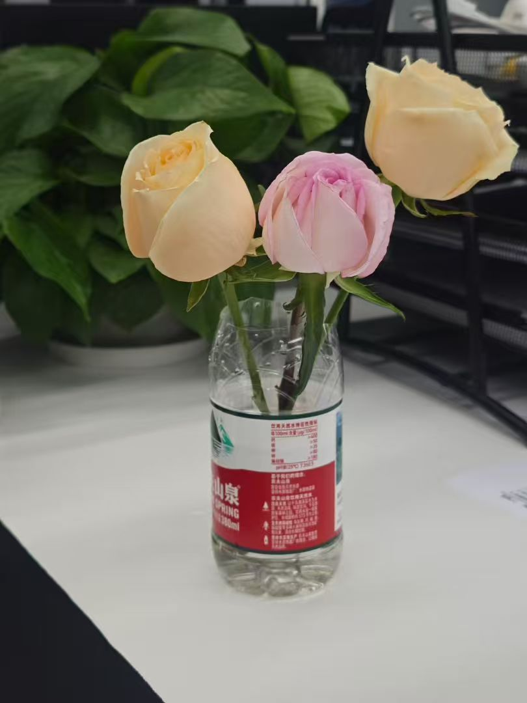
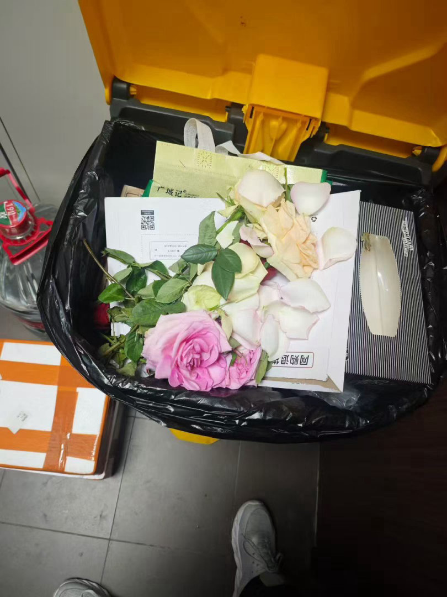
一周前
工作就在这前一周，我刚回过一趟家。外公还在医院。
爸爸、妈妈、外公、外婆、舅舅、舅妈、表妹，还有我，八个人，都在医院。
像是有安排一样。就在一星期之后，外公走了。那也是我们八个人最后一次凑齐。
那时候外公已经神志不清，犯困，清醒的时间很短，总是想睡。外婆努力把他叫醒，他才勉强睁开眼，看看我们。
同一班车
工作回去的路上，我给表妹发了消息，告诉她外公走了。她说她知道了。
舅妈想让表妹第二天白天再回，说太晚了，一个女孩子下了高铁还要坐出租，不安全。我把我从上海回扬州的班次号发给她。她找到了同一班车。
我们在高铁上碰了头。我走得急，没吃晚饭。她给了我一根健达巧克力。
下了高铁，坐出租到灵堂。妈妈直奔向我，抱住我，哭着说，外公是在她怀里走的。
回家
工作那几天，妈妈老梦到外公走。场景不一样，动作却跟真的一模一样：妈妈坐着，外公的头靠在她怀里。
后来，现实就是这样。
外公像是回光返照，一直吵着要回家。医生来检查，说眼神已经散了，趁着还有气，赶快办理出院。舅舅就去办了出院手续。
在舅舅的车上，外婆坐副驾驶，妈妈坐后排。外公躺在妈妈怀里。
快到家的时候，外公断了气。
直到最后，他也没能看到自己的房子。
吃什么吐什么
工作后来外公做了支架。从那之后，吃什么都不舒服，总觉得嗓子里有痰卡着。
到了后期，甚至吃什么吐什么，人变得很瘦。
外公不争气
工作后期我在上海上班，回外公家看望，是常事。
有一回，外公特别清楚地跟我说：辰辰啊，外公不争气啊，外公没用。
他深深地自责，自责自己这副不争气的身体。
球球去世
工作外婆家拆迁以后，搬进了新房子。那时候球球已经很老了。
老狗有哮喘，喘起来一直倒吸气，一下一下的。严重的时候会咳血。
刚搬新家，球球很不适应。可能是在老家的大房子待惯了，地方大，能到处跑。新房子里，家里人把它关在笼子里，想着关起来它也许能有点安全感。
它再老，每次看到我们来，还是很兴奋。
后来外公的身体也开始欠佳。想着球球这样，又老又病，家里顾不上，就把球球送到还没拆迁的一位老友家里去养。那位老友叫大罐子。当时也没多想，就送过去了。
舅舅、舅妈、表妹知道以后很生气。一是觉得球球都这么老了，要的是家人的陪伴，不该送走；二是怕大罐子会杀了球球吃狗肉。
外公也回过味来，赶紧给大罐子打电话，想把球球要回来。大罐子说，球球已经没了。那天门没关好，球球自己跑出去了。
后来怎么样，谁也不知道。也许是以为我们把它抛下了，伤心地开始流浪；也许是以为被人拐走了，拼命想回到我们身边；又或者，这都是大罐子的一面之词，球球早就上了饭桌，被榨干了最后的一点价值。
米米卡
工作那时候特别想要摩尔庄园的米米卡。卡面上是伊优——巴鲁斯的初始形态，我最喜欢的精灵。
那张卡后来在搬家还是打扫卫生的时候弄丢了。
三张米米卡
工作那张卡弄丢的时候没觉得怎样。那东西那时候也不值钱，丢了就丢了。
2026 年 7 月 7 日，我在闲鱼上买到了三张米米卡，全新未拆封，御三家的卡面。塑封还在，一点磨损都没有。
三张摊在桌上，我一张一张看过去，看了很久。
这张证是怎么来的
函授2022年3月，我进了南京工程学院，机械设计制造及其自动化，函授。函授不用天天到学校，读的是成人那一套。到2024年7月毕业，前后两年多。
走到这一步，背后是我爸。专科那两年，他给我报了两次升学考试，专转本、专升本，两条路都给我留着。他常说，多条路，多个机会。专转本是全日制的，我没考上；专升本是函授，我考上了。后来读的南京工程学院，就是这条函授的路。
学校离我的生活很远，这两年多里发生的事也不多。让我记住的，是最后那一场考试。
学位英语
函授函授毕业想拿学位，得先过一门学位英语。
不考听力。只考选择题、阅读理解，再加一篇作文。
准考证
函授准考证打印出来，上面写着：2024年4月21日上午十点到十一点半，考点是泰斯特无纸化测评中心，南京市江北新区浦口大道18号，红星美凯龙金街A6门，上了扶梯二楼。第9考场，2楼210-1，我的座号是36。
纸上还印着我的照片，和一行考生须知。
考试前一天，我提前到了南京。紧张是紧张的，可又不知道该怎么准备，索性破罐子破摔——觉得该过就过，过不了就算了。
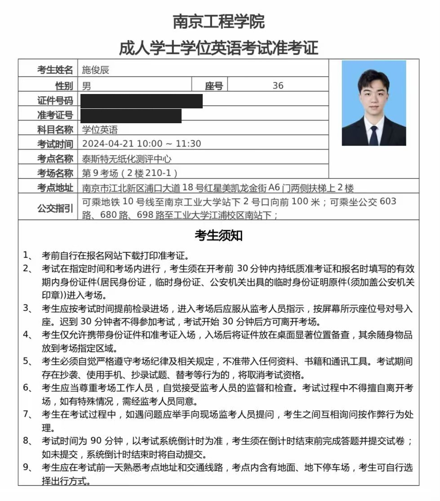
那块指示牌
函授考场设在商场里。扶梯上去，一块牌子立在通道中间：2024年南京工程学院成人学士学位英语考试。底下一格一格列着考场号，201到211，哪边直行、哪边左转，箭头画得清清楚楚。各考场区域都有存包柜和卫生间。
我站在牌子前看了一眼，找到了210-1的方向。
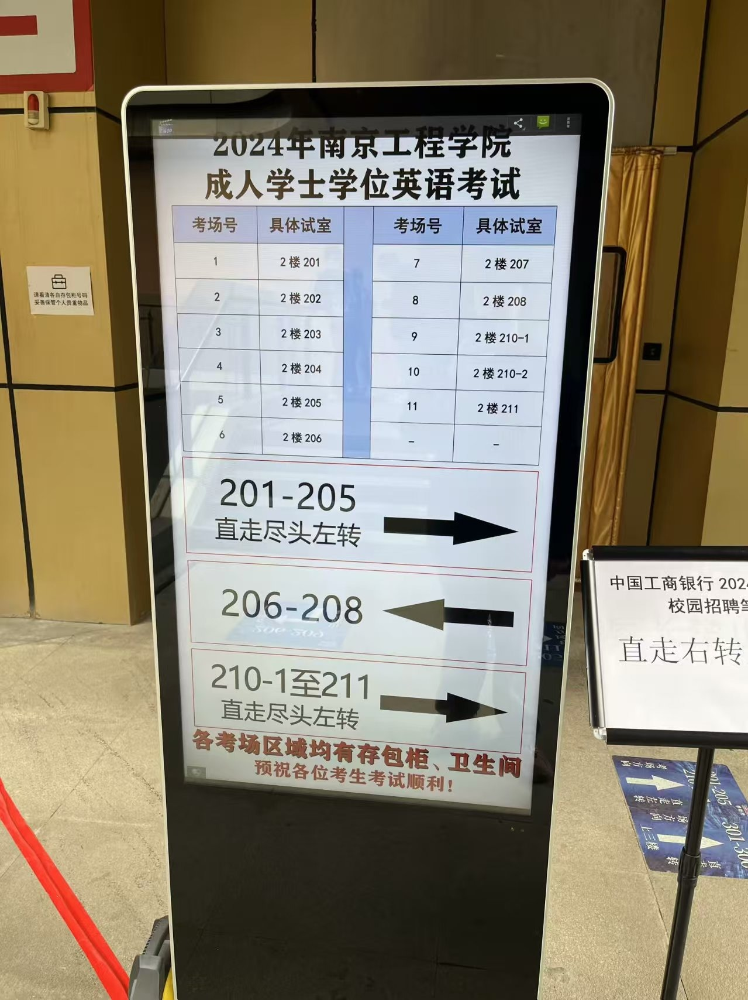
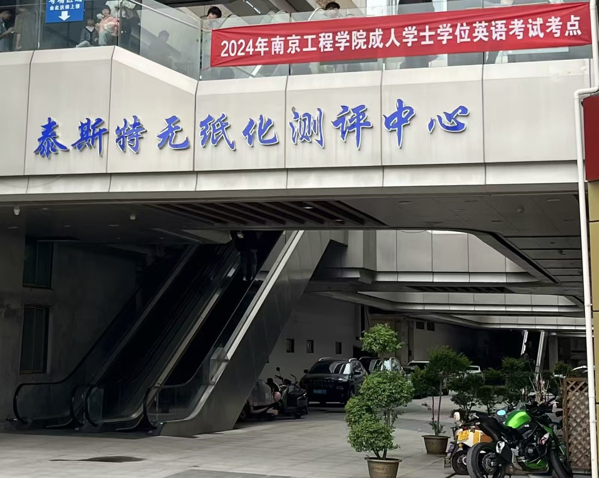
那张作文模板
函授作文只考书信。我手上有一张模板，是从B站几个UP主那里东拼西凑总结出来的，存在手机里。左边是不变的大纲，右边是七个可能考到的主题。
大纲是这样：
My name is [sb].
I am writing this letter to [sth].
The followings are the details.
First of all, [sth].
Furthermore, [sth].
Last but not least, [sth].
Thank you for your time and kind consideration for this letter.
If you have any questions, please contact me at any time.
I am looking forward to your early reply.
Yours truly,
[sb]
I am writing this letter to 后面的 [sth]，就从右边七个里选一个：
- 求职 — apply for this job
- 投诉 — complain about some problems
- 咨询 — inquire some information
- 预定 — book hotel rooms
- 祝贺 — congratulation to you
- 邀请 — invite you to join us
- 商务报告 — 右边空着
商务报告那一格，我当时就是赌它不会考。我把B站上讲学位英语的UP主翻了个遍，从没见谁说过考商务报告。
选好一个，剩下的空就自己发挥。这张表我背了很久。
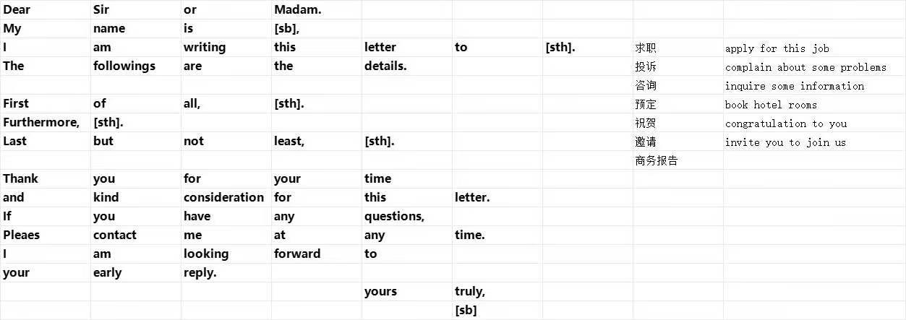
歪门邪道
函授我的词汇量一直不行，撑到现在，大概还是初中那点底子。
蒋杰让我去看B站一个叫颉斌斌的老师，讲阅读理解怎么做——找关键词，题目出现的顺序对应文章段落的顺序，诸如此类的小技巧。我照着练了练。这算是一条歪门邪道，可那场考试里，它确实帮了我。
63分
函授走出考场那一刻，我其实挺自信的。从小到大考完试我都自信，因为卷子都填满了，写的都是我自己的理解。
4月29日下午，我查了成绩。
63分。60分及格。
多了三分。
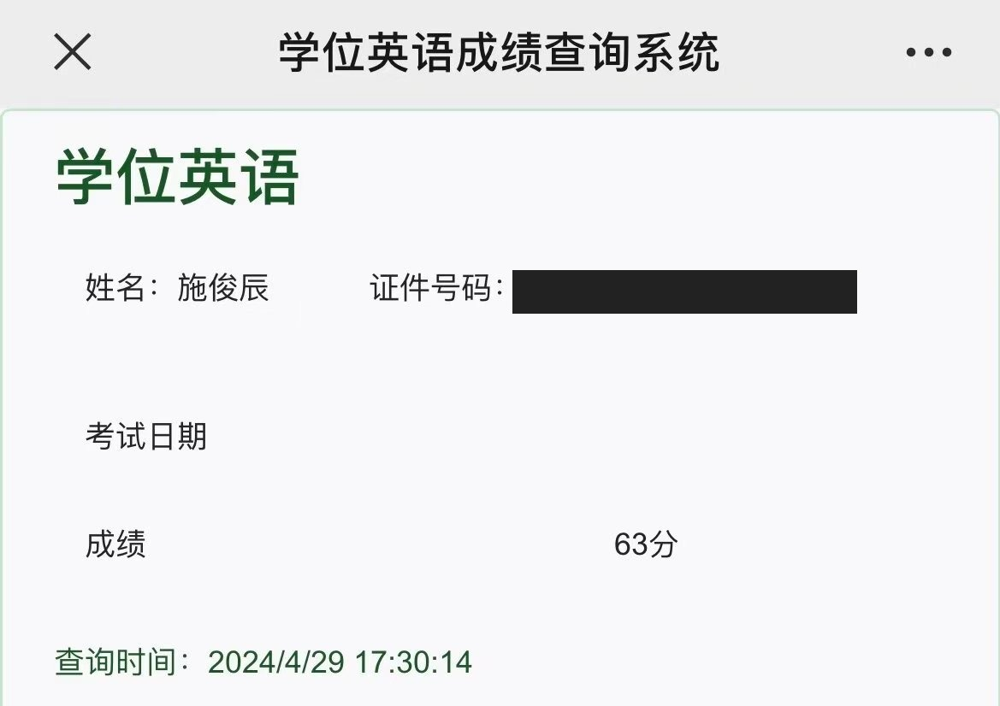
逛南工大
函授在南京那几天，蒋杰带我去看了他的学校，南京工业大学。校门口那排红字很大，隔着老远就能看见；楼上的钟楼很高，我站在底下仰着头拍了一张。
我们几个是初中同学，一直没断过联系——蒋杰、张康斯诚、徐轩、沈正雨，还有我，五个人。
蒋杰的故事我想留着以后单说。他老穿插在我的时间线里，还会反复出现。
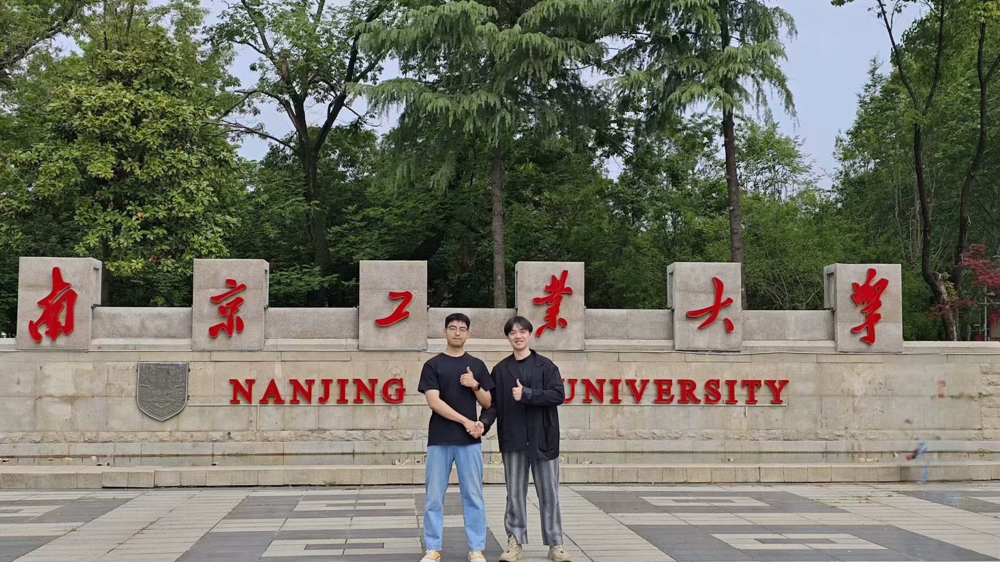
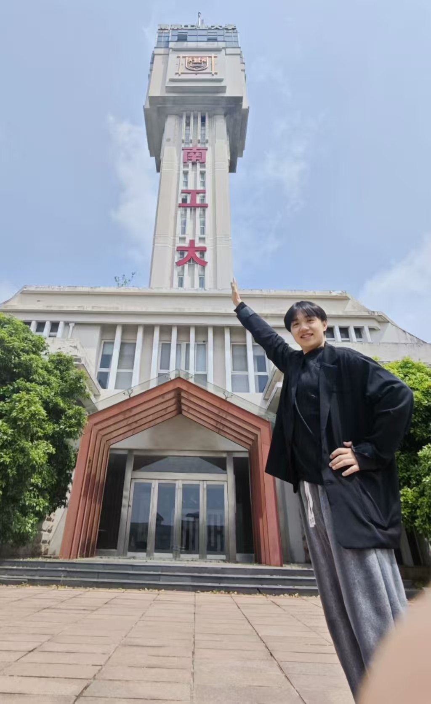
给奶奶看学位证
函授学位证拿到手那一周，我回了趟江都。
我把它拿给奶奶看，跟她说，我现在是大学生了。又掏出手机，把毕业证和学位证并排放好，拍了下来。
我是奶奶带大的，衣食住行都是她一手管的。老人家的一些想法是旧了些，可那些年她把我照顾得无微不至。总觉得书没读好，最对不起的就是家里人，尤其是她。
要说遗憾
函授拿到这张证，我知道我的学习生涯到此结束了。
我想过考研。可我要上班，要工作，没法脱产。也设想过非全的硕士，但身边都说那是学校拿来创收的，没含金量，对将来没什么帮助。我不知道该信谁。而且我确实也没有那个脑子继续读了——太老了，学不动了。
要说遗憾，大概就是没考上研究生吧。
南京工程学院这件事，到这张学位证也就结束了。自始至终，我好像都没能去看看我所谓的母校，到底长什么样子。
关于我
宇宙中心姓名
施俊辰。
听我妈妈说，我还没出生的时候，奶奶给我取了个名字，叫施大伟。妈妈没同意，才改成了俊辰。
俊，是希望我长得英俊。辰，是因为我属龙——辰就是龙。
小名
辰辰。
家里人这么叫我。外公在的时候，也是这么叫我的。
生日
2000 年 9 月 15 日。
血型
A 型。
出生地
江苏省扬州市江都区。
后来上幼儿园、小学、初中，也都在这座城里。
属相
龙。
辰就是龙，名字里的辰，就是这么来的。
星座
处女座。
幼儿园三年
2004 年 9 月入学，2007 年 6 月毕业。
江都区机关幼儿园。这三年，是我在这座城里读书的头三年。
小学六年
2007 年 9 月入学，2013 年 6 月毕业。
江都区实验小学。六年。
初中三年
2013 年 9 月入学，2016 年 6 月毕业。
江都区第二中学。
大专五年
2016 年 9 月入学，2021 年 6 月毕业。
江苏联合职业技术学院 扬州技师学院，数控技术，五年一贯制。
年表
原始记录照录工作履历
- 2019.7 — 2019.8扬州顶津食品有限公司（康师傅）· 技师学院暑期工
- 2019.9 — 2019.12扬州钰能精密机械科技有限公司 · 技师学院工学交替
- 2020.7 — 2020.8扬州广菱电子有限公司 · 技师学院学分
- 2021.2 — 2021.7江苏昊冠精密加工有限公司 · 技师学院毕业分配
- 2021.8 — 2022.2江苏亚威机床股份有限公司 · 舅爷爷黄金华介绍
- 2022.3 — 2023.4交通银行信用卡中心 · 职校同学何宇浩推荐
- 2023.4 — 至今中集同创浦江（上海）贸易有限公司 · 舅舅内推
志愿服务
- 2017年扬州鉴真国际半程马拉松志愿者
- 2018年扬州红十字会志愿者
- 2018年扬州鉴真国际半程马拉松志愿者
- 2019年社区防空演习志愿者
升学
- 2016.9.8 — 2021.6.30江苏联合职业技术学院 扬州技师学院 数控技术 普通全日制
- 2021年4月25日江苏省苏州市文正学院 专转本考试（全日制） 失败
- 2021年10月23—24日江苏省扬州市旅游商贸学校 专升本考试（函授） 成功
- 2022.3.1 — 2024.7.5南京工程学院 机械设计制造及其自动化 函授